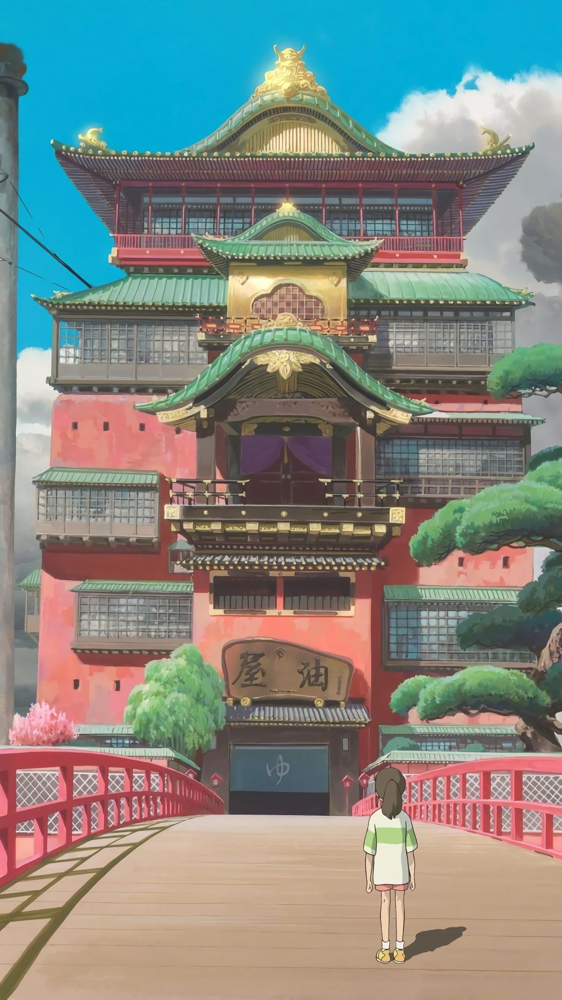
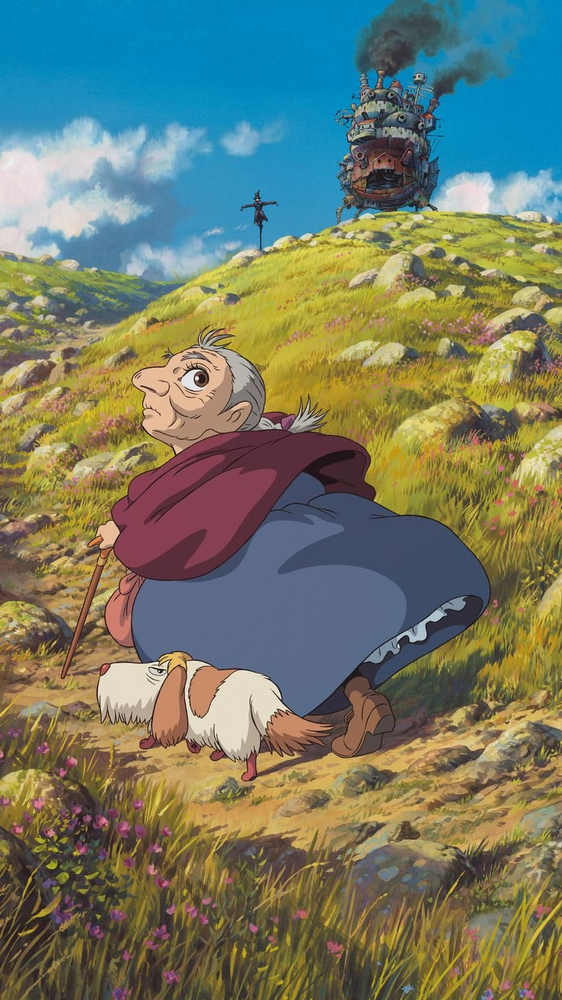
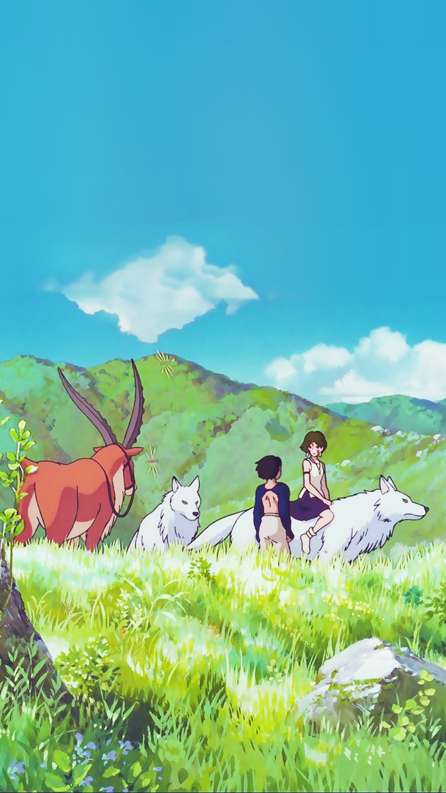
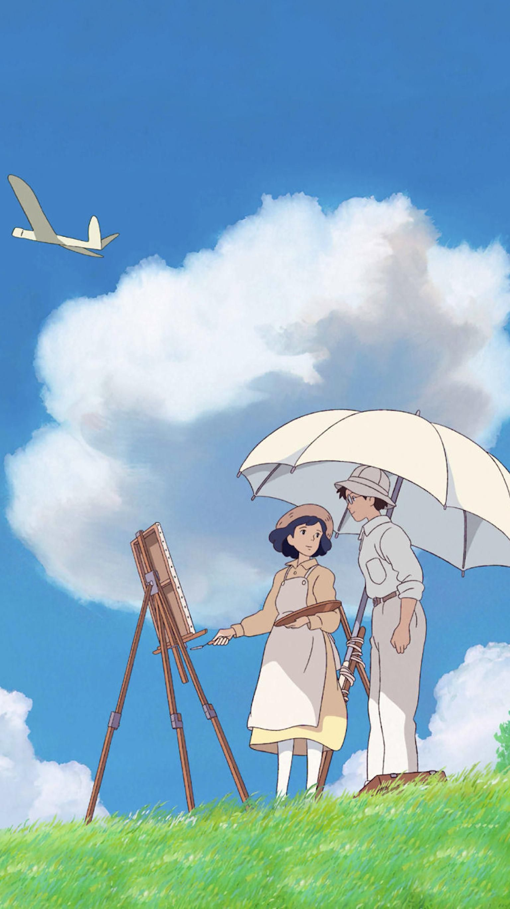
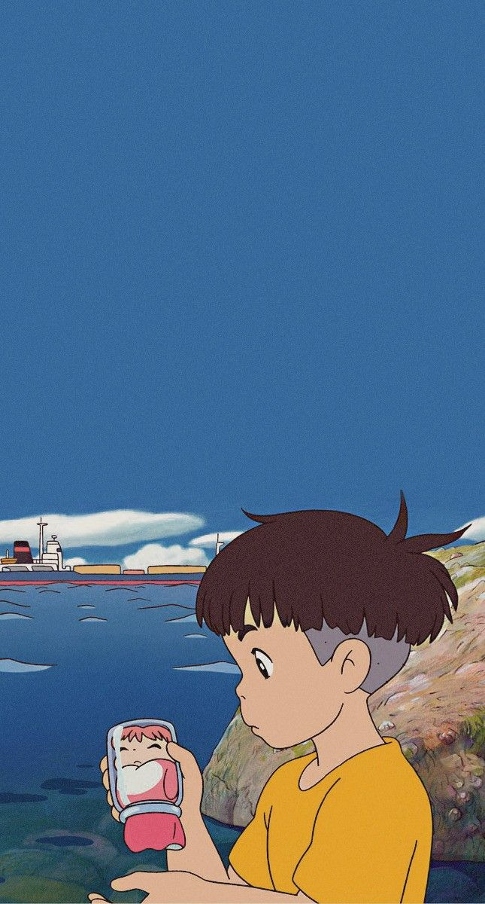
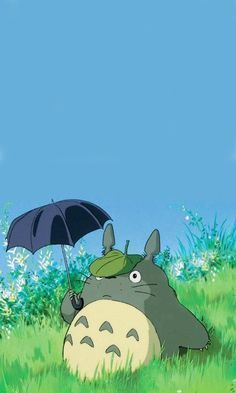

" The modern world is barren, empty and deceitful. Hopefully, I can live to see the day when all
developers go bankrupt, Japan becomes impoverished, and tall wild grass will covers everything. "
Hayao Miyazaki priznani genij, oseba, katera dediščina, čigar prispevki v umetnosti so tako
pomembni, da
jih ne morejo prezreti ali omalovažiti niti najbolj trmasti skeptiki. Ta oseba je lahko tekmovala
oziroma je svetu predstavila polnopravno alternativo Disneyjevim delom. V avtorjevih
projektih se na prvi pogled
namenjenim za otroke pogosto skrivajo odmevi družinskih tragedij, množičnih zastrupitev na Japonskem,
feminističnih motivov, narava in sramu za domovino. Njegova dela so globoka, dodelana, poetična. Lahko jih
analiziramo in razstavljamo neskončno. Hayao Miyazaki japonski animator, režiser in
scenarist. obitnik oskarja za najboljši
animirani celovečerec (Odstranjeni od duha). Na Beneškem filmskem festivalu je prejel zlatega leva za svoj
prispevek k svetovni kinematografiji. Njegovi najbolj znani filmi so Princesa Mononoke, Howl's
Moving Castle,
Veter je močnejši, Ponyo ribe na pečini, Spirited Away.
Kratka biografija
Hayao se je rodil 5. januarja 1941 v Tokiu na Japonskem v družini Miyazakiju Katsujiju. Hayao
se je rodil med
drugo
svetovno vojno, takrat je bil njegov oče direktor Miyazaki Airplane, tovarne za izdelavo delov za letala A6M
Zero. Dečkova mati je bila bolna za tuberkulozo, premeščena iz bolnišnice v bolnišnico, zato se je družina
pogosto selila.
Hayao je prvo zanimanje za animacijo pokazal v srednji šoli, ko je videl risanko "Legenda o
beli kači" (1958) v
režiji Kazuhiko Okabe in Taiji Yabushita. Po tem Hayao je trdo odločil, da bo postal karikaturist.
Po srednji šoli se je vpisal na prestižno univerzo Gakushuin, Fakulteto za politiko in ekonomijo. Hkrati z
razumevanjem ekonomskih ved je študent Miyazaki študiral otroško literaturo v univerzitetnem klubu.
Po diplomi je 22-letni diplomant šel delati kot fazni premik pri Toei Animation. In leto pozneje, leta 1964, je
prevzel mesto predsednika sindikata. Pri 24 letih se je poročil z Akemi Oto, ki mu je kasneje
rodila dva sinova.
Hayao je začel režirati animirane filme pri 30 letih. Leta 1971 je postal član avtorjev animirane serije
o
genialnem tatu Lupinu III (1971-1972). Sledilo je delo na "Lupine III: Part 2" (1977 - 1980) in "Lupine III:
Castle Cagliostro" (1979), "Conan - deček iz prihodnosti" (1978).
Hayao je pri 43 letih predstavil sliko "Nausicaä iz doline vetrov" (1984). In čeprav to ni bilo
prvo delo
animatorja, se je prav od nje začel njegov vzpon na Olimp slave kot vzgojitelj in ustvarjalec. Leta 1985 je
skupaj s prijateljem in kolegom Isao Takahata ustanovil animacijski Studio Ghibli, ki je
poosebljal avtorjeva
kasnejša dela.
Hayaova dela so hitro postala uspešnica na Japonskem. Posebej so zagrmeli: "Moj sosed Totoro"
(1988), "Porco
Rosso"cite (1992), "Princess Mononoke" (1997).
Zanimivo je, da se avtor najsvetlejših in najbolj mavričnih animiranih filmov smatra za "popolnega pesimista".
Kljub pesimizmu ne bom snemal filmov, ki govorijo o obupu, begu in skrivanju. Vse, kar želim povedati,
je: ne
bojte se, nekega dne se bo vse postavilo na svoje mesto in nekje vas bo zagotovo čakalo dobro.
prizna Hayao.
Leta 2001 je njegov film Spirited Away postal najdonosnejši film na Japonskem v vsej njeni
zgodovini.
Zahvaljujoč tej sliki se je slava japonskega karikaturista razširila po vsem svetu. Za Spirited Away je Miyazaki
prejel oskarja za najboljši animirani film in glavno nagrado berlinskega filmskega festivala ter nominacije za
evropsko in britansko filmsko akademijo, za nagrado Saturn in francoskega Cesarja.
Leta 2004 je Miyazaki predstavil svojo naslednjo mojstrovino - Howl's Moving Castle, ki je
ponovno osvojil
svetovno slavo in bil nagrajen z nominacijo za oskarja in nagrado na Beneškem filmskem festivalu. Leta 2005 mu
je beneška žirija podelila častno nagrado zlatega leva za prispevek k svetovni kinematografiji. Tri leta pozneje
je bil Miyazaki ponovno nagrajen v Benetkah, saj je prejel vrsto nagrad za animirani film Ponyo Fish on
the
Cliff (2008).
Leta 2013 je izšlo Hayaovo novo delo The Wind Rises. je dejal, da bo na tem
posnetku končal svojo
kariero.
Prvi sin velikega mojstra Goro Miyazaki (1967) je postal tudi animator. In mlajši Kensuke je rezbar po lesu.






Priljubljena dela Hayao Miyazakija
Ime:
Datum izdaje:
IMDb Rating:
Čas:
Spirited Away
2001
8,6
125 min. / 02:05
Howl's Moving Castle
2004
8,2
119 min. / 01:59
Moj sosed Totoro
1988
8,2
86 min. / 01:26
Princesa Mononoke
1997
8,4
134 min. / 02:14
Navska iz Doline vetrov
1984
8,1
112 min. / 01:52
Nebeški grad Laputa
1986
8.0
125 min. / 02:05
Veter je močnejši
2013
7.8
126 min. / 02:06
Witchova dostavna služba
1989
7,9
103 min. / 01:43
Ponyo ribe na pečini
2008
7,7
101 min. / 01:41
Šepet srca
1995
8,3
111 min. / 01:51
Arietti iz dežele pritlikov
2010
7,9
90 min. / 01:30
Porco Rosso
1992
7,7
94 min. / 01:34
Studio Ghibli
Kratko:
Studio Ghibli je japonski animacijski studio. Studio je leta 1985 ustanovil režiser in scenarist Miyazaki Hayao
skupaj s svojim kolegom in prijateljem Isao Takahata ob podpori Tokume, ki je kasneje distribuiral Princess
Mononoke
in Spirited Away z Waltom Disneyjem. Logo studia prikazuje Totoro, lik iz animeja "My Neighbor Totoro" iz leta
1988,
ki ga je izdal Studio Ghibli. Soundtrack za večino filmov je napisal Jo Hisaishi. Studio Ghibli je bilo eno
prvih
japonskih podjetij, ki je aktivno uporabljalo računalnike v animaciji.
Izvor imena:
Ime »Ghibli«, ki ga je izbral Mijazaki, ponazarja njegovo frustracijo nad takratno animejsko produkcijo, zaradi
katere sta ustanovitelja šla na svoje, hkrati pa tudi njegovo navdušenje nad starinskimi letali in Sredozemljem.
Ime izhaja iz kodnega naziva za italijansko izvidniško letalo Caproni CA-309 iz druge svetovne vojne, ta pa iz
libijske besede za vroč jugo. To po Mijazakijevih besedah simbolizira vlogo studia kot »vroč veter, ki bo
zapihal v svetu japonske animacije«.
Vzpon:
Ustvarjalna politika je bila sprva takšna, da je studio v trenutni projekt vložil vsa svoja sredstva in energijo
in če bi bil izdelek polomija, bi to pomenilo njegov konec. Tako so nastali prvi štirje celovečerni animeji in
vsak od njih je povečal ugled ter prepoznavnost studia. Leta 1989 pa je izšel njihov dotlej najuspešnejši
celovečerec, Kikina dostavna služba (魔女の宅急便, Majo no Takkyūbin), ki je bil uspešnica leta na Japonskem in studiu
prinesel več prihodkov kot vsi dotedanji filmi skupaj. Improvizirani pogoji, v katerih je deloval studio, niso
bili več zadostni. Mijazaki je prepričal vodstvo matičnega podjetja da mu odobri dodatna sredstva in studio je
zaposlil dodatne animatorje, vzpostavil šolo animacije ter zgradil nove prostore, ki so zamenjali najete
pisarne.
Studio Ghibli še vedno ustvarja skoraj izključno celovečerne animeje, kar predstavlja bistveno večje poslovno
tveganje kot pri konkurenčnih studiih.[1] Kljub temu so njihovi filmi po pravilu izredno dobro sprejeti na
Japonskem, studio pa ima veliko zaslug tudi za popularizacijo animejev med najširšim občinstvom na Zahodu. Prva
mednarodno distribuirana uspešnica studija je bil anime Princesa Mononoke (もののけ姫, Mononoke-hime) iz leta 1997,
visokoproračunska fantazijska saga o človekovem odnosu do okolja, postavljena v srednjeveško Japonsko. Princesa
Mononoke je podrl rekord zaslužka v japonskih kinematografih, saj je v sedmih mesecih prinesel 150 milijonov
dolarjev prihodkov. Kot prvi klasični anime je bil predvajan v Sloveniji (leta 2000 v okviru festivala
Liffe), a v rednem kino programu dve leti kasneje ni bil uspešen. Tudi v ZDA je bil deležen mešanega odziva
javnosti, predvsem zaradi kompleksnosti in temačnih motivov, kakršnih zahodnih risank vajeno občinstvo ni
pričakovalo.
Leta 2001 je izšel Ghiblijev do sedaj najuspešnejši anime, Čudežno potovanje (千と千尋の神隠し, Sen to Chihiro no
Kamikakushi). Še pred premiero v ZDA je prinesel 200 milijonov dolarjev prihodkov in je do danes finančno
najuspešnejši film vseh časov na japonskem (Princesa Mononoke je na tretjem mestu, drugi pa je ameriški film
Titanik). Anime je bil nepričakovano nominiran za oskarja za najboljši animirani film in ga na podelitvi leta
2002 tudi prejel, kljub temu, da ga distributer (The Walt Disney Company) ni posebej promoviral. Bil je tudi
prvi animirani film v zgodovini, ki je na Berlinalu prejel glavno nagrado - zlatega medveda.
Danes:
Družba za gospodarske analize NiikeiPB Consulting je v svoji raziskavi Brand Japan 2008 ugotovila, da je
blagovna znamka Studio Ghibli druga po prepoznavnosti in priljubljenosti na Japonskem v kategoriji podjetij, ki
poslujejo neposredno s potrošniki. Trenutni predsednik studia je od 1. februarja 2008 Kodži Hošino, nekdanji
predsednik japonske podružnice The Walt Disney Company, ki je položaj prevzel od Tošia Suzukija.
Studiev zadnji anime je Miyazakijev Ponjo na skali ob morju (崖の上のポニョ, Gake no Ue no Ponyo), ki je na Japonskem
izšel 19. julija 2008. Gre za priredbo Andersenove pravljice Mala morska deklica. Ghiblijevi (posebej
Mijazakijevi) animeji so vedno vsebovali zahodnjaške motive, Ponjo pa je tretji v seriji najnovejših animejev,
ki so nastali neposredno po literarni predlogi zahodnih avtorjev - Čarovnik Howl in gibljivi grad (ハウルの動く城,
Hauru no Ugoku Shiro, 2004) je bil posnet po istoimenskem romanu britanske pisateljice Diane Wynne Jones, Zgodbe
iz Zemljemorja (ゲド戦記, Gedo Senki, 2006), ki ga je režiral Hajaov sin Gorō, pa po istoimenski seriji romanov
ameriške pisateljice Ursule K. Le Guin. Glasbo za večino studievih animejev (vse Hajaove) ustvarja skladatelj
Joe Hisaiši.
Vse naslove v tujini distribuira The Walt Disney Company oz. njegova podružnica Miramax Films. Studio Ghibli je
znan po tem, da ne dovoli nikakršnega prirejanja svojih filmov za tuje trge. Takšna stroga politika je posledica
ravnanja z animejem Nausicaä iz Dežele vetra; pri The Walt Disney Company, ki so odkupili pravice za
distribucijo vseh (tudi starejših) naslovov, so anime drastično spremenili za ameriški trg (izdan je bil pod
naslovom Warriors of the Wind - Bojevniki vetra). Izrezanih je bilo več prizorov, pri ustvarjanju dialogov v
angleščini pa so bistveno spremenili celotno zgodbo. Ko je odgovorni pri Miramaxu predlagal, da bi prilagodili
tudi Princeso Mononoke, je od producenta prejel avtentično katano s preprostim sporočilom: »No cuts« (»Nobenega
rezanja«).
Viri
S klikom na ta gumb boste prenesli pdf datoteko z vsemi povezavami do spletnih mest, ki sem jih uporabil kot vir informacij.
 Hayao se je rodil 5. januarja 1941 v Tokiu na Japonskem v družini Miyazakiju Katsujiju. Hayao
se je rodil med
drugo
svetovno vojno, takrat je bil njegov oče direktor Miyazaki Airplane, tovarne za izdelavo delov za letala A6M
Zero. Dečkova mati je bila bolna za tuberkulozo, premeščena iz bolnišnice v bolnišnico, zato se je družina
pogosto selila.
Hayao je prvo zanimanje za animacijo pokazal v srednji šoli, ko je videl risanko "Legenda o
beli kači" (1958) v
režiji Kazuhiko Okabe in Taiji Yabushita. Po tem Hayao je trdo odločil, da bo postal karikaturist.
Po srednji šoli se je vpisal na prestižno univerzo Gakushuin, Fakulteto za politiko in ekonomijo. Hkrati z
razumevanjem ekonomskih ved je študent Miyazaki študiral otroško literaturo v univerzitetnem klubu.
Po diplomi je 22-letni diplomant šel delati kot fazni premik pri Toei Animation. In leto pozneje, leta 1964, je
prevzel mesto predsednika sindikata. Pri 24 letih se je poročil z Akemi Oto, ki mu je kasneje
rodila dva sinova.
Hayao je začel režirati animirane filme pri 30 letih. Leta 1971 je postal član avtorjev animirane serije
o
genialnem tatu Lupinu III (1971-1972). Sledilo je delo na "Lupine III: Part 2" (1977 - 1980) in "Lupine III:
Castle Cagliostro" (1979), "Conan - deček iz prihodnosti" (1978).
Hayao je pri 43 letih predstavil sliko "Nausicaä iz doline vetrov" (1984). In čeprav to ni bilo
prvo delo
animatorja, se je prav od nje začel njegov vzpon na Olimp slave kot vzgojitelj in ustvarjalec. Leta 1985 je
skupaj s prijateljem in kolegom Isao Takahata ustanovil animacijski Studio Ghibli, ki je
poosebljal avtorjeva
kasnejša dela.
Hayaova dela so hitro postala uspešnica na Japonskem. Posebej so zagrmeli: "Moj sosed Totoro"
(1988), "Porco
Rosso"cite (1992), "Princess Mononoke" (1997).
Zanimivo je, da se avtor najsvetlejših in najbolj mavričnih animiranih filmov smatra za "popolnega pesimista".
Hayao se je rodil 5. januarja 1941 v Tokiu na Japonskem v družini Miyazakiju Katsujiju. Hayao
se je rodil med
drugo
svetovno vojno, takrat je bil njegov oče direktor Miyazaki Airplane, tovarne za izdelavo delov za letala A6M
Zero. Dečkova mati je bila bolna za tuberkulozo, premeščena iz bolnišnice v bolnišnico, zato se je družina
pogosto selila.
Hayao je prvo zanimanje za animacijo pokazal v srednji šoli, ko je videl risanko "Legenda o
beli kači" (1958) v
režiji Kazuhiko Okabe in Taiji Yabushita. Po tem Hayao je trdo odločil, da bo postal karikaturist.
Po srednji šoli se je vpisal na prestižno univerzo Gakushuin, Fakulteto za politiko in ekonomijo. Hkrati z
razumevanjem ekonomskih ved je študent Miyazaki študiral otroško literaturo v univerzitetnem klubu.
Po diplomi je 22-letni diplomant šel delati kot fazni premik pri Toei Animation. In leto pozneje, leta 1964, je
prevzel mesto predsednika sindikata. Pri 24 letih se je poročil z Akemi Oto, ki mu je kasneje
rodila dva sinova.
Hayao je začel režirati animirane filme pri 30 letih. Leta 1971 je postal član avtorjev animirane serije
o
genialnem tatu Lupinu III (1971-1972). Sledilo je delo na "Lupine III: Part 2" (1977 - 1980) in "Lupine III:
Castle Cagliostro" (1979), "Conan - deček iz prihodnosti" (1978).
Hayao je pri 43 letih predstavil sliko "Nausicaä iz doline vetrov" (1984). In čeprav to ni bilo
prvo delo
animatorja, se je prav od nje začel njegov vzpon na Olimp slave kot vzgojitelj in ustvarjalec. Leta 1985 je
skupaj s prijateljem in kolegom Isao Takahata ustanovil animacijski Studio Ghibli, ki je
poosebljal avtorjeva
kasnejša dela.
Hayaova dela so hitro postala uspešnica na Japonskem. Posebej so zagrmeli: "Moj sosed Totoro"
(1988), "Porco
Rosso"cite (1992), "Princess Mononoke" (1997).
Zanimivo je, da se avtor najsvetlejših in najbolj mavričnih animiranih filmov smatra za "popolnega pesimista".